長期トレンド
JKMとJEPXシステムプライスの推移グラフ
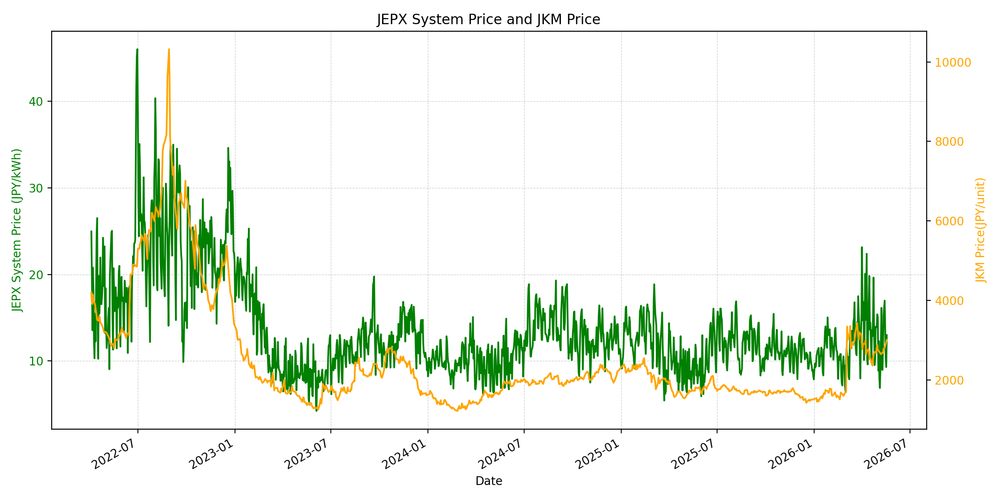
WTIの推移グラフ
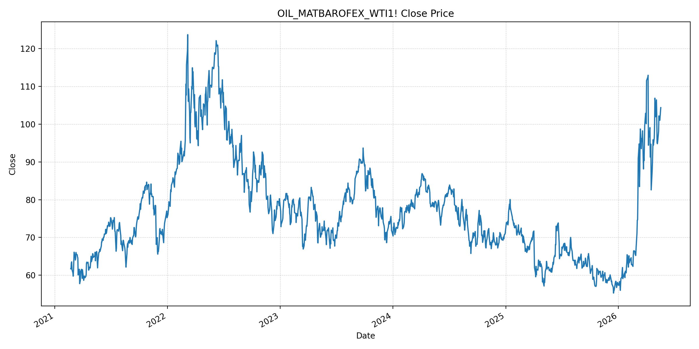
JEPXエリアプライスグラフ（直近一年分）
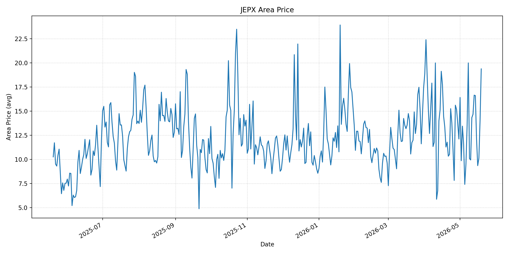
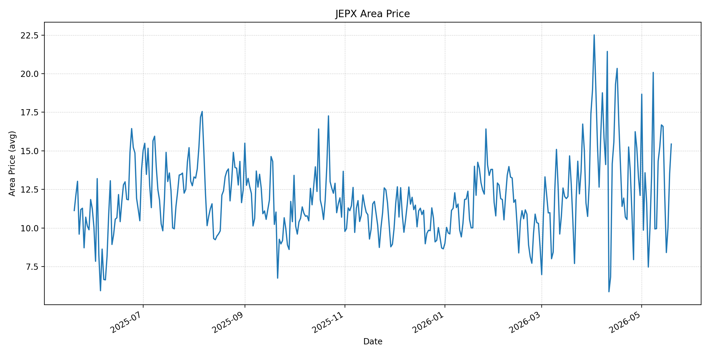
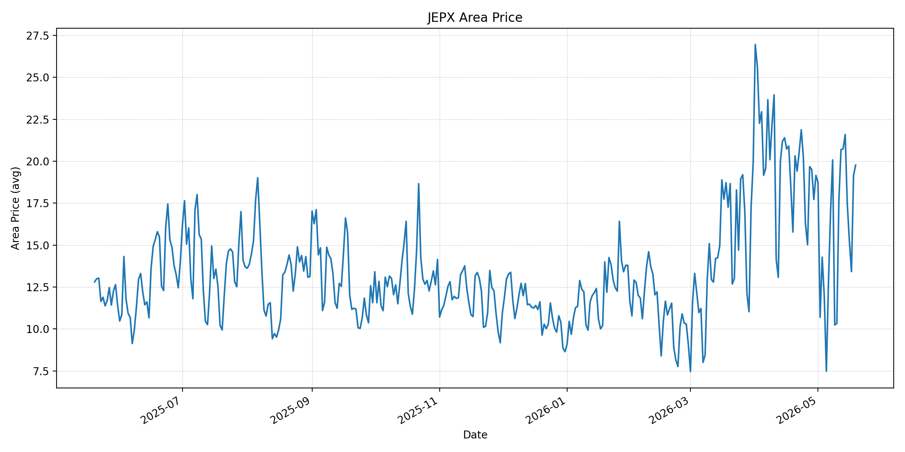
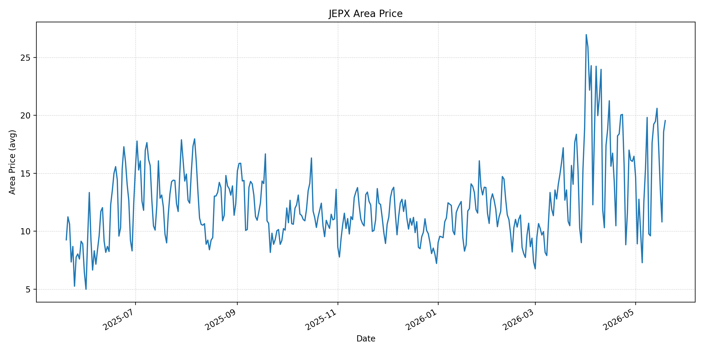
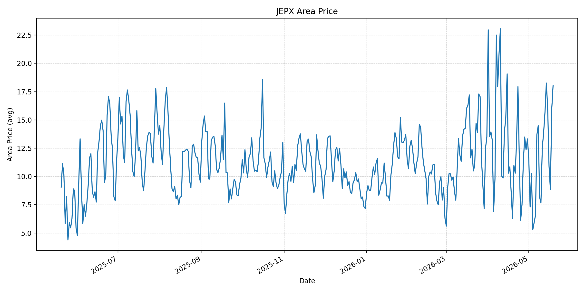
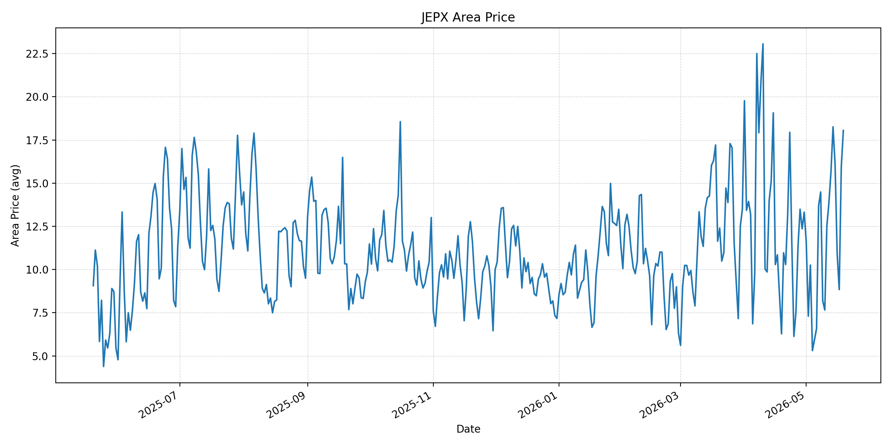
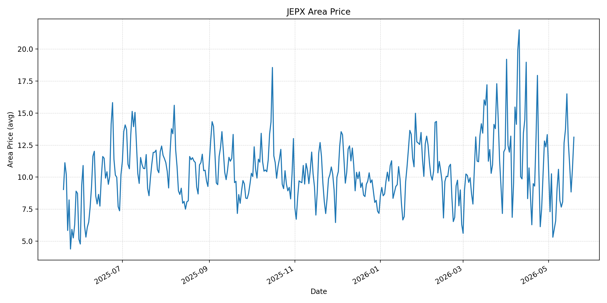
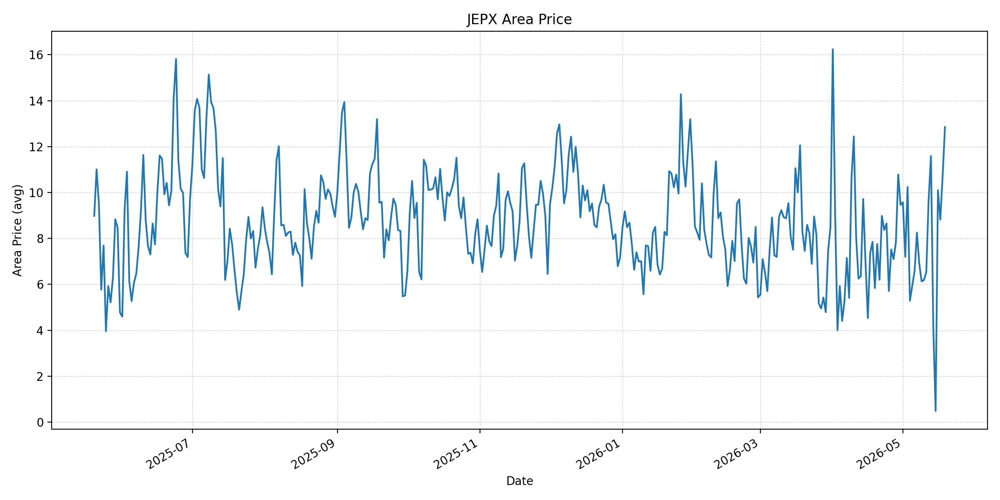
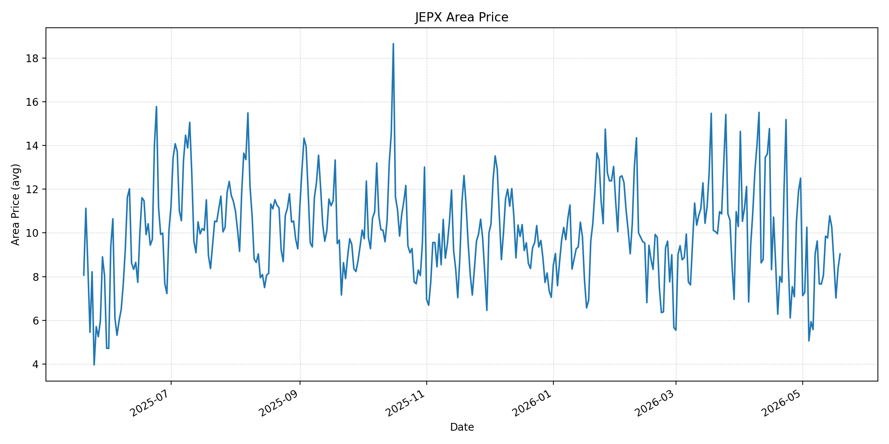
短期トレンド
JKMとJEPXシステムプライスの推移グラフ
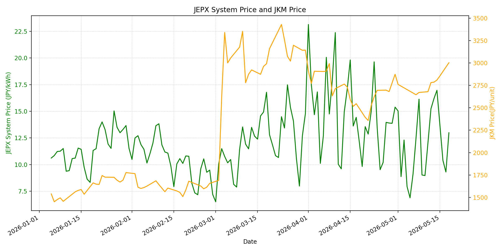
WTIの推移グラフ
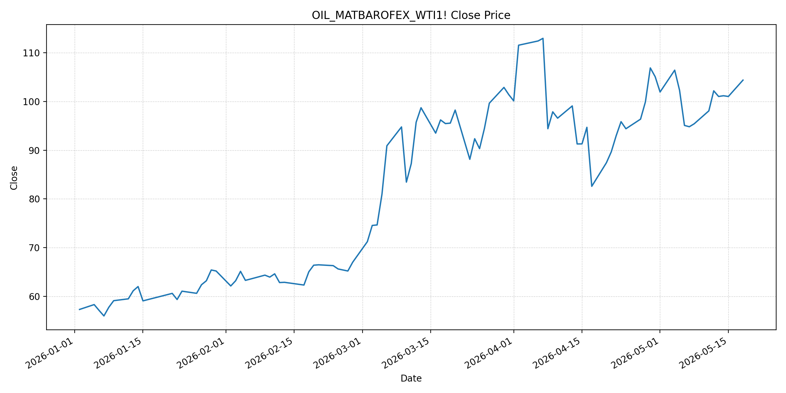
JEPXシステムプライス
JEPXは受渡日ベースの最新非空値で評価しています。最新値は 2026-05-19 分です。先週終値は 2026-05-12 時点の直近値、先月終値は 2026-04-30 時点の直近値で評価しています。
| エリア | 当日価格 | 前日価格 | 前日比（％） | 先週終値 | 先週比（％） | 先月終値 | 先月比（％） | 過去最高値 | 最高値比（％） |
|---|---|---|---|---|---|---|---|---|---|
| システム | 14.57 | 12.99 | 12.16 | 15.24 | -4.4 | 15.39 | -5.33 | 64.06 | -77.26 |
| 北海道 | 19.37 | 14.02 | 38.16 | 14.67 | 32.04 | 12.11 | 59.95 | 73.92 | -73.79 |
| 東北 | 15.44 | 13.52 | 14.2 | 15.25 | 1.25 | 12.11 | 27.5 | 84.92 | -81.82 |
| 東京 | 19.77 | 19.16 | 3.18 | 20.69 | -4.45 | 19.16 | 3.18 | 86.13 | -77.05 |
| 中部 | 19.55 | 18.58 | 5.22 | 19.24 | 1.61 | 16.47 | 18.7 | 52.06 | -62.45 |
| 北陸 | 18.05 | 15.95 | 13.17 | 13.88 | 30.04 | 13.32 | 35.51 | 46.48 | -61.17 |
| 関西 | 18.05 | 15.95 | 13.17 | 13.88 | 30.04 | 13.32 | 35.51 | 46.48 | -61.17 |
| 中国 | 13.12 | 10.72 | 22.39 | 12.67 | 3.55 | 13.32 | -1.5 | 46.48 | -71.78 |
| 四国 | 12.85 | 10.72 | 19.87 | 9.66 | 33.02 | 9.46 | 35.84 | 46.48 | -72.36 |
| 九州 | 9.04 | 8.35 | 8.26 | 9.85 | -8.22 | 12.5 | -27.68 | 40.54 | -77.7 |
LNG先物価格
最新値は 2026-05-18 の LNG(close) です。先週終値は 2026-05-11 時点の直近値、先月終値は 2026-04-30 時点の直近値で評価しています。
| 当日価格 | 前日価格 | 前日比（％） | 先週終値 | 先週比（％） | 先月終値 | 先月比（％） | 過去最高値 | 最高値比（％） |
|---|---|---|---|---|---|---|---|---|
| 3003 | 2856 | 5.15 | 2680 | 12.05 | 2874 | 4.49 | 10319 | -70.9 |
石油先物価格
最新値は 2026-05-18 の OIL(close) です。先週終値は 2026-05-11 時点の直近値、先月終値は 2026-04-30 時点の直近値で評価しています。
| 当日価格 | 前日価格 | 前日比（％） | 先週終値 | 先週比（％） | 先月終値 | 先月比（％） | 過去最高値 | 最高値比（％） |
|---|---|---|---|---|---|---|---|---|
| 104.38 | 101.02 | 3.33 | 98.07 | 6.43 | 105.07 | -0.66 | 123.7 | -15.62 |
ニュース
イラン情勢に関するニュース
- 2026年5月19日、TBSは、イラン最大の石油輸出拠点カーグ島で少なくとも10日間連続して大型外航タンカーが確認されていないと報じました。米軍の港湾封鎖でイランの輸出収入と市場供給が圧迫され、イラン側は生産抑制と在庫管理を迫られています。 参照: TBS CROSS DIG with Bloomberg, 2026-05-19
- 2026年5月19日、共同通信は、WTI先物が週明け18日に108.66ドルで終えたと報じました。ホルムズ封鎖による供給途絶の長期化が買い材料となる一方、トランプ米大統領がイラン再攻撃の延期を示したことで、通常取引後は上げ幅が縮小しました。 参照: OANDA/共同通信, 2026-05-19
ホルムズ海峡経由の石油・LNGに関するニュース
- 2026年5月19日、TBSは、戦争開始後にホルムズ海峡を通ってペルシャ湾に入ったイラン関連以外の大型タンカーの多くが、積み荷を載せて湾外へ出航していると報じました。ただし、紛争前から湾内にいる約100隻はなお足止めされており、通航実績は通常時の一部にとどまります。 参照: TBS CROSS DIG with Bloomberg, 2026-05-19
- 2026年5月18日、テレビ朝日は、ホルムズ海峡の事実上封鎖後に同海峡を通過した中東産LNGタンカーが東京湾に到着したと報じました。JERAの千葉県の火力発電所に向かう見込みで、LNG供給には一部正常化の兆しが出ています。 参照: テレビ朝日, 2026-05-18
ホルムズ海峡経由でない石油・LNGに関するニュース
- 2026年5月18日、TBSは、赤沢経済産業大臣がブラジル外相と会談し、原油調達での連携を呼びかけたと報じました。ブラジル側は日本の安定供給に貢献できる姿勢を示し、リオ沖油田の増産を背景に非ホルムズ調達先としての重要性が高まっています。 参照: TBS CROSS DIG with Bloomberg, 2026-05-18
- 2026年5月18日、JOGMECは、ホルムズ封鎖と米国の対イラン港湾封鎖が続く中で原油価格が再び上昇し、アジアの製油・石油製品需給にも影響が出ていると整理しました。非ホルムズ調達は進む一方、製品需給と輸送コストの波及は続いています。 参照: JOGMEC, 2026-05-18
日本国内のイラン戦争に関係するニュース
- 2026年5月18日、日本に到着した中東産LNGタンカーは、JERAの千葉県の火力発電所へ向かう見込みです。ホルムズ通過後のLNGが日本に届いたことは、短期の燃料供給不安を一部和らげる材料です。 参照: テレビ朝日, 2026-05-18
- 過去24時間で、日本国内のJEPX制度や電力市場制度に直接影響する新規の重大発表は確認できませんでした。一方、ブラジル原油調達協議や中東産LNG到着は、燃料調達と火力運用を通じて国内電力コストに影響します。 参照: TBS CROSS DIG with Bloomberg, 2026-05-18
インサイト
ニュース事項による日本の電力市場への影響（短期：数日〜1週間）
- JEPXシステムプライスは 14.57 円/kWhで前日比 12.16% 上昇しましたが、先週比 -4.4%、先月比 -5.33% です。北海道 19.37、東京 19.77、中部 19.55 は高く、九州 9.04 とのエリア差が大きい状態です。
- LNGは 3003 と前日比 5.15%、先週比 12.05%、OILは 104.38 と前日比 3.33%、先週比 6.43% 上昇しました。ホルムズ通航の一部再開と日本着LNGは安心材料ですが、カーグ島の積み出し停滞と原油高は短期燃料費を押し上げます。
- 数日から1週間では、JEPXは燃料価格だけでなく地域需給の影響が大きく、特に北海道、東京、中部の高値が続くかを確認する必要があります。LNG船到着により物理供給リスクは低下しますが、燃料先物の上昇は火力限界費用を押し上げる方向です。
ニュース事項による日本の電力市場への影響（長期：1ヶ月〜半年）
- OILは先月比 -0.66% まで4月末水準に接近し、LNGは先月比 4.49% と上回りました。ホルムズ通航が通常水準に戻らず、イラン輸出拠点の停滞が続く場合、1ヶ月から半年の燃料費調整には上振れ圧力が残ります。
- ブラジル原油調達協議は非ホルムズ調達の分散として有効ですが、日本が定期的に利用してきた供給源ではありません。調達先の遠距離化、品質調整、輸送・保険コストが積み上がるため、原油供給量が確保されても燃料コストは下がりにくい局面が想定されます。
- JEPXシステムは月末比で -5.33% ですが、北海道は 59.95%、北陸・関西は 35.51%、四国は 35.84% 上昇しています。長期の電力調達では、全国平均だけでなくエリア価格の上振れ、LNG価格の再上昇、非ホルムズ調達コストを織り込む必要があります。